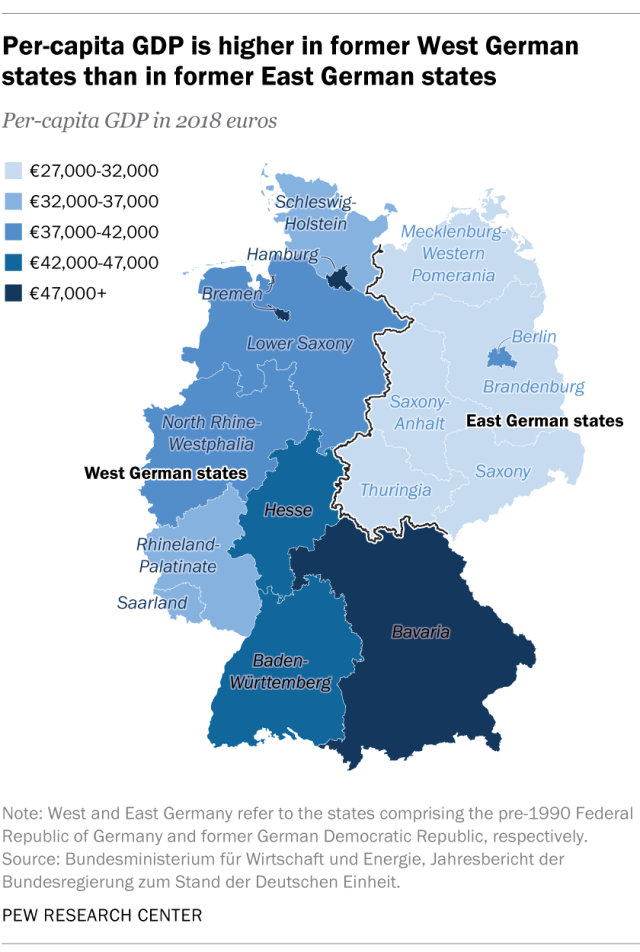
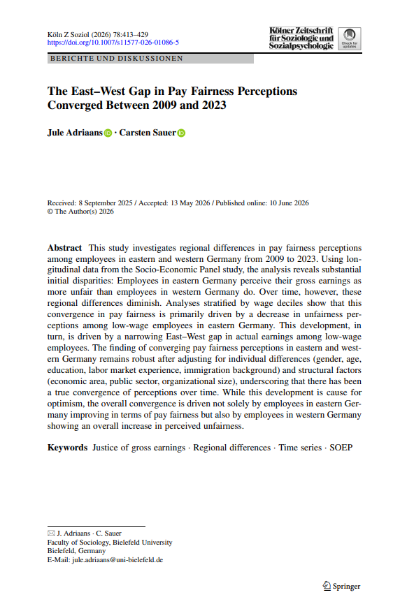
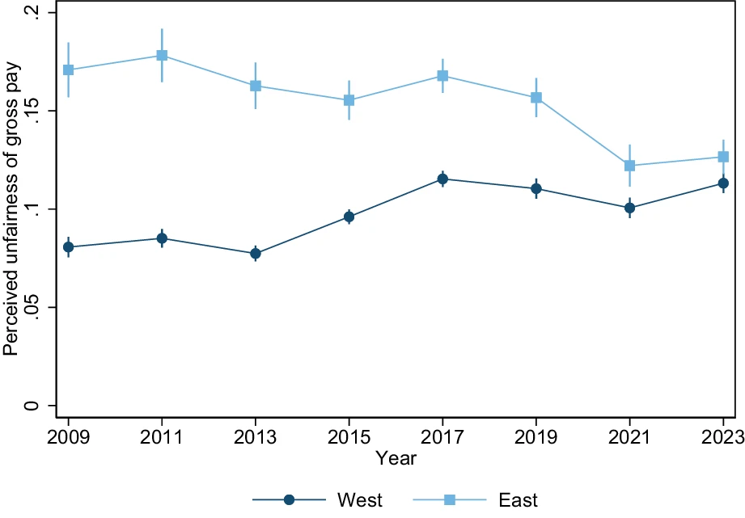
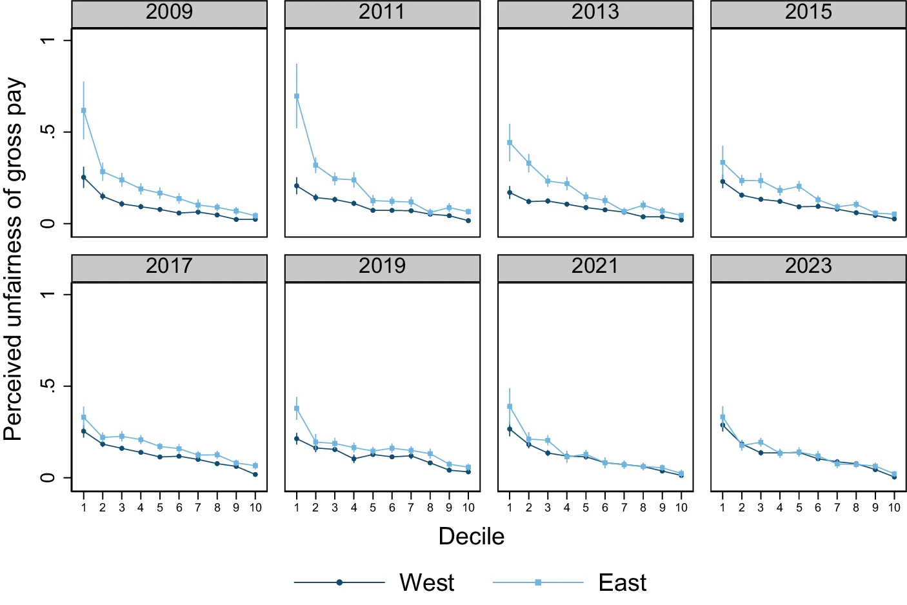
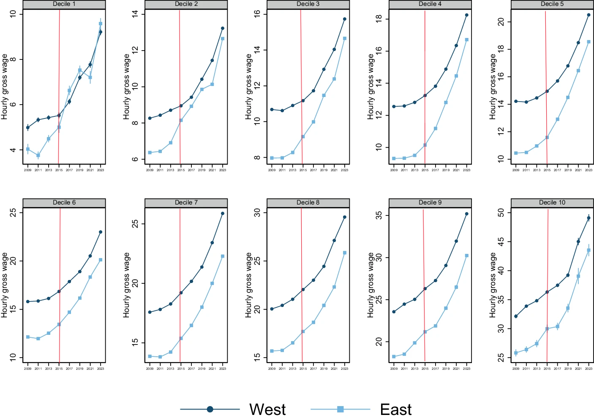
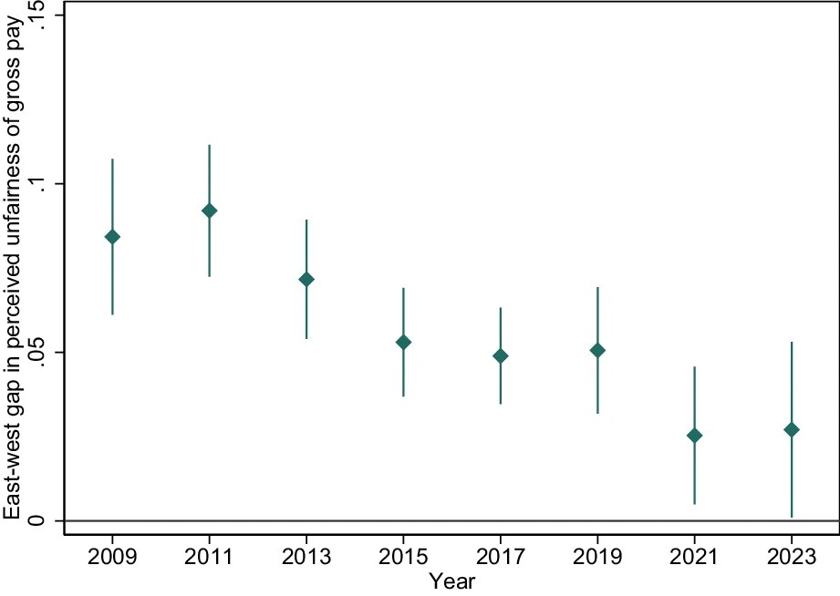

Adriaans, J. & Sauer, C. (2026), Köl. Z. Soziol.
Presentación de paper para Sociología del Estado de Bienestar (SOL3043)
ignacio.zavala@uc.cl · GitHub
La justicia distributiva no depende solo de cuánto se gana, sino de si ese monto se percibe o no como merecido. Quienes evalúan su pago como injusto reportan menor satisfacción con la vida, peor salud física y menor confianza política (Adriaans, 2023; Schnaudt et al., 2021; Schunck et al., 2015).

Fuente: Pew Research Center (2019).
Debate actual: ¿han aumentado/bajado las diferencias entre Alemania del Este y del Oeste en términos de actitudes, ideologías y condiciones de vida? (Campbell, 2023; Mau et al., 2024) \(\rightarrow\) podría reflejar una legitimación más cohesionada de la desigualdad económica en la Alemania unificada (Adriaans & Sauer, 2026).
Pregunta de investigación: ¿cómo han cambiado, a nivel regional, las percepciones de justicia salarial entre Alemania del Este y del Oeste entre 2009 y 2023?

Fuente: Adriaans & Sauer (2026).
La sociología de la justicia pregunta qué se percibe socialmente como justo (empírico) . Las percepciones de justicia son un pilar del orden social: se vinculan a legitimidad, cooperación y confianza institucional (Liebig & Sauer, 2016; Sabbagh & Schmitt, 2016).
Injusticia percibida en el pago \(\rightarrow\) medición de sentimientos de privación relativa en la población (Jasso, 1978)
Injusticia \(\rightarrow\) salario real se desvía del estándar considerado justo: subpago vs. sobrepago. Brechas mayores \(\rightarrow\) percepciones de injusticia (“lo merecido” vs. “lo obtenido”) más intensas y consecuencias más severas (Jasso, 1978; Jasso et al., 2016).
Los principios de justicia legítimos (equidad vs. igualdad vs. necesidad) varían según el contexto institucional y cultural (Hülle et al., 2018; Wegener & Liebig, 2000):
S. Pickel & Pickel (2023): la insatisfacción del Este como privación relativa y falta de reconocimiento respecto del Oeste \(\rightarrow\) potencial deslegitimación del orden económico \(\rightarrow\) Conflictos regionales.
Variable dependiente: Unfairness: basada en el Índice de Evaluación de Justicia de Jasso (1978)
\[J = \ln\left(\frac{\text{Salario real}}{\text{Salario justo}}\right) \qquad \text{Unfairness} = -1 \times J\]
¿Cómo interpretar los valores? Al estar en escala logarítmica, \(\%\text{ subpago} = 1 - e^{-\text{Unfairness}}\)
| Unfairness | % de subpago percibido |
|---|---|
| 0.08 | ~7.7% |
| 0.11 | ~10.4% |
| 0.18 | ~16.5% |
Ejemplo: un valor de Unfairness = 0.08 significa que, en promedio, las personas perciben que se les paga ~7.7% menos de lo que consideran justo.
\[\text{Unfairness}_i = \beta_0 + \beta_1 \text{East}_i + \gamma X_i + \delta Y_i + \varepsilon_i\]

Fig. 1 Trends in perceived unfairness of gross pay among employees in eastern and western Germany, 2009–2023 (Adriaans & Sauer, 2026, p. 420).

Fig. 2 Perceived unfairness of gross pay among employees in eastern and western Germany by wage decile from 2009 to 2023 (Adriaans & Sauer, 2026, p. 421).
Patrón constante en todos los años: a mayor decil de ingreso, menor injusticia percibida (gradiente negativo). Brecha Este–Oeste concentrada en deciles bajos y medios (1–6), especialmente marcada en 2009–2013.
En deciles altos (7–10): diferencias mínimas y estadísticamente irrelevantes durante todo el período.

Fig. 3 Nominal hourly gross wages of employees in eastern and western Germany by wage decile from 2009 to 2023 (Adriaans & Sauer, 2026, p. 422). Líneas rojas añadidas para año 2015 (introudcción del salario mínimo nacional).
Crecimiento salarial nominal generalizado en ambas regiones y todos los deciles. Factor clave: introducción del salario mínimo nacional en 2015, con beneficio desproporcionado para bajos ingresos del Este (Bossler & Schank, 2023).
Deciles bajos (1–5): el Este crece más rápido que el Oeste desde ~2013.
Deciles medios-altos (6–10): la brecha salarial relativa Este–Oeste se mantiene estable, sin convergencia clara.

Fig. 4 Adjusted East–West gap in perceived unfairness of gross pay among employees in Germany, 2009–2023 (Adriaans & Sauer, 2026, p. 424).
Coeficiente \(\beta_1\) para cada año de la encuesta. 2009: brecha ajustada Este–Oeste \(\approx\) 9%. incluso comparando trabajadores con las mismas características individuales y estructurales. Tendencia sostenida a la baja en los años siguientes.
2023: brecha residual ≈ 2.5 p.p., aún estadísticamente significativa (\(p = 0.042\)), matiz que contrasta con la Figura 1, donde la brecha simple ya no era significativa.
Retomando la pregunta: hay convergencia real y estadísticamente relevante en la percepción subjetiva de justicia salarial (2009–2023) entre Alemania del Este y del Oeste, impulsada principalmente por el catch-up salarial de bajos ingresos en el Este.
Esta es una convergencia parcial (persiste una brecha residual en 2023) y de doble filo (también empeora en el Oeste). Aporta evidencia sobre la legitimidad compartida de la desigualdad económica en la Alemania unificada, aunque no resuelve por sí sola las tensiones identitarias y políticas regionales.
Mecanismo principal: el salario mínimo de 2015 actúa como catalizador del catch-up salarial en el Este; el desempleo se descarta como explicación (desacoplado de la percepción de justicia, sobre todo en el Oeste).
Mecanismo general: la disolución de disparidades estructurales materiales se traduce en una alineación de actitudes subjetivas (Wegener & Liebig, 2000).
La convergencia implica mejora del Este pero también deterioro sostenido en el Oeste (0.08 \(\rightarrow\) 0.11). El país converge hacia un nivel moderado de insatisfacción compartida más que hacia una mejora generalizada.
Desacople entre bienestar económico individual y cohesión política: persisten (e incluso se intensifican) tensiones identitarias Este–Oeste entre jóvenes, y el apoyo a AfD se asocia a privación colectiva, no personal (Mau et al., 2024; G. Pickel & Pickel, 2026).
Límites de los datos:
Modelo de regresión por año:
Conexión con error de medición (Clase 2): la distinción entre cambio real de creencias y error de medición no está completamente resuelta en este diseño. Un modelo Quasi-Simplex (Wiley & Wiley, 1970) permitiría separar el true score (\(\eta_t\)) del error de medición (\(\epsilon_t\)), algo que un conjunto de regresiones año a año no logra.
Parte de la “convergencia” observada podría reflejar inestabilidad en vez de un cambio genuino de creencias, especialmente relevante dado que el propio cambio de formato de la pregunta en 2015 (binario \(\rightarrow\) escala de 11 puntos) introduce una fuente adicional de error de medición, solo parcialmente descartada por el chequeo de robustez de los autores (Adriaans & Sauer, 2026, p. 418).
Mecanismos complementarios:
¡Muchas gracias!
Preguntas y comentarios bienvenidos.